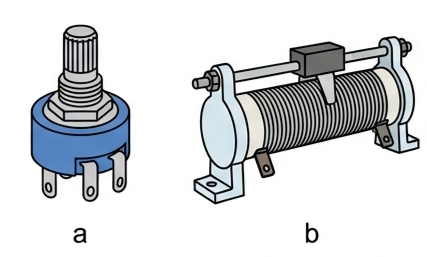
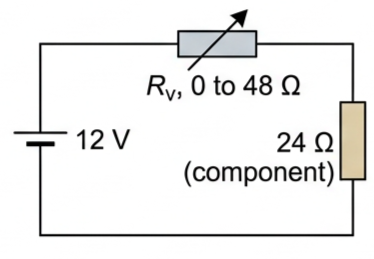
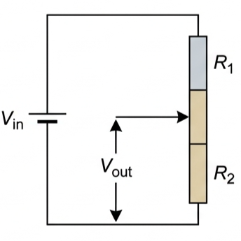
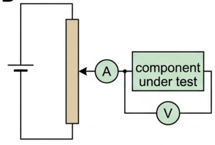
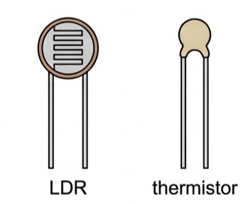
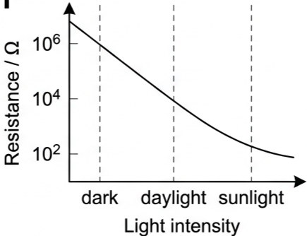
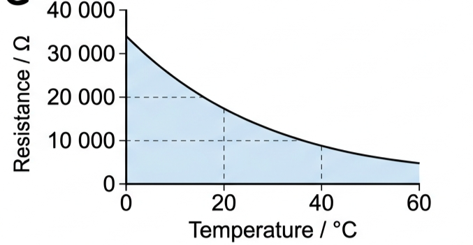
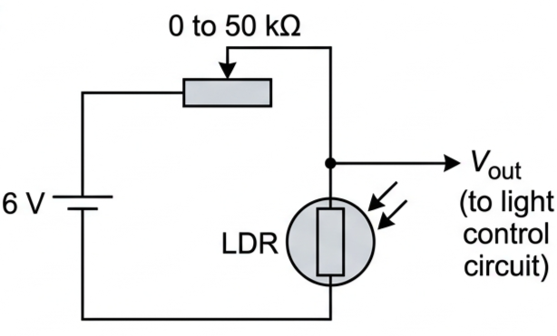
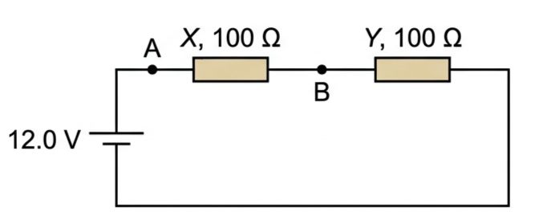
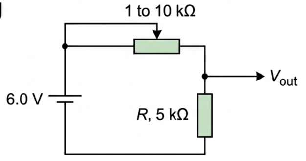

🎛️ Hook – two variable resistors that do very different jobs
Resistors can have variable resistance. Variable resistors come in a wide variety of shapes and sizes. In Fig 1, a is small and has a high resistance; b is much larger because it is designed to carry bigger currents, although it has a lower resistance — it is often called a rheostat.

📏 The rheostat: a two-terminal limit
Many variable resistances have three terminals — one at each end of the resistance track, and a third, movable sliding contact between them. When only two of the three terminals are used (one end plus the slider), the device behaves as a simple series resistor of adjustable size: a rheostat.
Worked example B5.7. A battery supplies a constant 12 V (negligible internal resistance). A fixed component has resistance 24 Ω; a rheostat varies from 0 to 48 Ω, in series with the component. Find the current and the p.d. across each part at three rheostat settings.
\(I = 12/(24+0)\)
\(I = 12/(24+24)\)
\(I = 12/(24+48)\)
\(R_{\text{v}}=24\,\Omega\): \(I=0.25\ \text{A}\), \(V_{\text{v}}=6.0\ \text{V}\), \(V_{\text{comp}}=6.0\ \text{V}\).
\(R_{\text{v}}=48\,\Omega\): \(I=0.17\ \text{A}\), \(V_{\text{v}}=8.0\ \text{V}\), \(V_{\text{comp}}=4.0\ \text{V}\).

🔀 The potentiometer: the full range
A potentiometer is the name given to a three-terminal variable resistor when its sliding contact is used to produce a varying p.d., rather than just a varying series resistance.
Connected as in Fig 3, the potentiometer provides a p.d., \(V_{\text{out}}\), that varies continuously from zero to the full p.d. of the battery, \(V_{\text{in}}\). Maximum voltage is obtained with the sliding contact at the top (as drawn); the voltage is zero with the contact at the bottom, when both connections to the other circuit come from the same point.

A potentiometer provides the best way of varying the p.d. across a component in order to investigate its \(I\)–\(V\) characteristics (Fig 4). When a potentiometer feeds another circuit, \(V_{\text{out}}\) cannot be assumed correct without considering the resistance of that circuit — generally the circuit's resistance should be much higher than the potentiometer's, unlike in the worked example below.

Worked example B5.8. Same values as before: 12 V supply, component 24 Ω, potentiometer 0 to 48 Ω. Find the p.d. across the component with the slider at the top, at the bottom, and at the mid-point.
\(V_{\text{bottom}} = (12/36)\times 12\)
🌡️ Sensors: LDRs and thermistors
Fig 5 shows an LDR (light-dependent resistor) and a thermistor, both semi-conducting components used as electrical sensors in circuits controlling lighting and heating.

More light energy releases more charge carriers in an LDR, so its resistance falls sharply as light intensity rises — from about \(10^{6}\,\Omega\) in the dark to about \(10^{2}\,\Omega\) in bright sunlight (10,000× less; note the resistance scale is logarithmic). Thermal energy releases more charge carriers in a thermistor, so its resistance falls as it gets hotter (this type is called NTC — a second type, PTC, has resistance that rises with temperature instead).
📈 Graph mastery – resistance against the sensed quantity
| Graph type | Axes (X, Y) | Shape | What to read |
|---|---|---|---|
| LDR resistance vs light intensity | Light intensity · Resistance/Ω (log scale) | Steadily falling curve, dark→sunlight | \(\sim\!10^{6}\,\Omega\) in the dark down to \(\sim\!10^{2}\,\Omega\) in sunlight |
| Thermistor (NTC) resistance vs temperature | Temperature/°C · Resistance/Ω (linear scale) | Falling curve, steeper at low T | About 33,000 Ω at 0 °C falling to about 5,000 Ω at 60 °C |


✍️ Worked example B5.9 – an LDR light-switch
Consider the circuit of Fig 8: a 6.0 V supply across a variable resistor (\(R_{\text{v}}\)) in series with an LDR, \(V_{\text{out}}\) taken across the LDR. The light comes on if \(V_{\text{out}} > 5.0\) V. With \(R_{\text{v}} = 50\,\text{k}\Omega\), find \(V_{\text{out}}\) in bright sunlight and in a dark room. Take LDR resistances from Fig 6.
sunlight: \(V_{\text{LDR}} = 6.0\times\dfrac{100}{100+50000}\)
dark: \(V_{\text{LDR}} = 6.0\times\dfrac{1.0\times10^{6}}{1.0\times10^{6}+50000}\)

🌍 Real-world: from rough comparison to a calibrated sensor
An LDR in a potential-dividing circuit can compare light intensities at different times or places, but only roughly. If more accuracy is needed, the output must be calibrated against a reliable reference meter, which usually displays intensity in lux (not needed in this course). The same applies to a thermistor calibrated against a thermometer to make a working thermostat.
🚀 Extension – swapping the sensor's position
In Fig 8 the LDR is the bottom resistor, so \(V_{\text{out}}\) rises as it gets darker (its resistance rises). Swap the LDR and the fixed resistor's positions, and \(V_{\text{out}}\) instead rises as it gets brighter — useful for a circuit that must switch on in daylight rather than darkness. The same trick works for a thermistor: put it on top to make \(V_{\text{out}}\) fall as temperature rises (a heating thermostat), or on the bottom to make \(V_{\text{out}}\) rise as temperature rises (a cooling/fridge thermostat).
Challenge: a refrigerator thermostat needs \(V_{\text{out}}\) to rise as the inside gets warmer, triggering the compressor. Where should the (NTC) thermistor go — top or bottom of the divider? Answer: on top. As temperature rises, thermistor resistance falls, so a smaller fraction of the divider's p.d. drops across it and a larger fraction drops across the fixed bottom resistor — so \(V_{\text{out}}\), taken across that bottom resistor, rises.
⚠️ Trap corner – common mistakes
| Misconception | Correct view |
|---|---|
| A rheostat in series can reduce a component's p.d. to zero | It can only reduce it to a minimum set by the ratio of the two resistances (4.0 V in Worked example B5.7) — never to zero. Only a potentiometer connection gives the full 0→\(V_{\text{in}}\) range |
| A potentiometer's \(V_{\text{out}}\) can always be read off directly from the ratio of its two halves | Only if the circuit it feeds has much higher resistance than the potentiometer. If it doesn't (as in Worked example B5.8), the fed circuit's resistance is in parallel with part of the potentiometer and changes the ratio |
| LDR resistance increases with light intensity | It decreases — more light releases more charge carriers, lowering resistance |
| Thermistor resistance always decreases with temperature | True only for the common NTC type. A PTC thermistor's resistance rises with temperature |
| The resistance axis on an LDR graph behaves like a normal linear scale | It is logarithmic — equal divisions represent ×10 changes in resistance, not equal additions |
Complete the statements:

✓ (b) \(R_{\text{lamp}} = V/I = 6.0/2.5 = 2.4\ \Omega\).
✓ Lamp ∥ X: \((100\times2.4)/102.4 = 2.34\ \Omega\), in series with Y (100 Ω) — total 102.34 Ω.
✓ \(V_{\text{lamp}} = 12.0\times2.34/102.34 \approx 0.27\ \text{V}\) — far below the 6.0 V needed, so the lamp will glow very dimly, not normally.
✓ (c) With X removed, lamp (2.4 Ω) is in series with Y (100 Ω): \(I = 12.0/102.4 = 0.117\ \text{A}\), \(V_{\text{lamp}} = 0.117\times2.4 \approx 0.28\ \text{V}\) — still far short of 6.0 V, so it still will not work normally.
✓ (d) The lamp needs a resistor placed so most of the 12.0 V is dropped elsewhere at the lamp's rated current — e.g. a series "dropper" resistor of \((12.0-6.0)/2.5 = 2.4\ \Omega\), or a properly sized potential divider designed around the lamp's 2.4 Ω working resistance.

✓ Min \(V_{\text{out}}\) when the variable resistor is largest (10 kΩ): \(V_{\text{out}} = 6.0\times5/(10+5) = 2.0\ \text{V}\).
✓ (b) Adding a parallel 5 kΩ load lowers the effective output resistance, so both the maximum and minimum \(V_{\text{out}}\) decrease.
✓ (c) From Fig 7: about 33,000 Ω at 0 °C falling to about 5,000 Ω at 60 °C.
✓ Percentage change \(\approx (33000-5000)/33000\times100 \approx 85\%\) decrease.
✓ Placing the thermistor on top (rather than the bottom) is the key design choice — it makes \(V_{\text{out}}\) rise, not fall, as the fridge warms up.
✓ (b) Fridges, freezers, ovens, kettles, irons, immersion/water heaters, air conditioners.
✓ Method: heat gradually, stir continuously for a uniform temperature, and at each interval (e.g. every 5 °C) pause, let the reading settle, and record temperature and resistance.
✓ Take readings over a wide range (e.g. 0 °C, using an ice bath, up to 60 °C or beyond) and repeat for reliability.
✓ Diagram should show: beaker of water, thermometer bulb near the thermistor bead, thermistor leads to the ohmmeter, stirrer, and heat source — all labelled.
✓ Plot resistance (y) against temperature (x) to obtain a curve like Fig 7.
✓ Safety: use an electrically insulated thermistor probe or keep leads/meter away from the water.